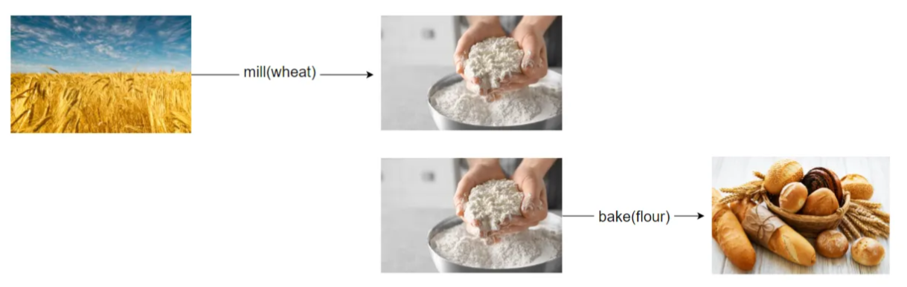
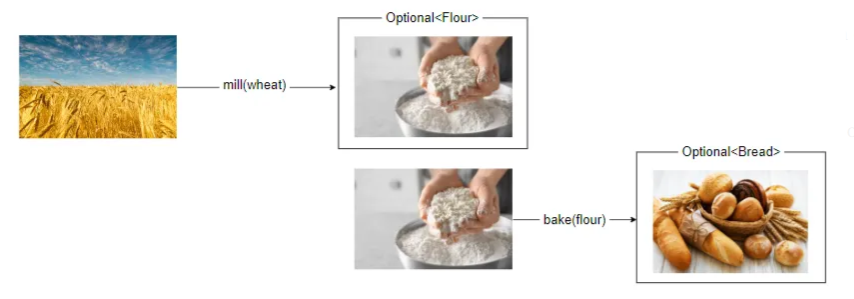
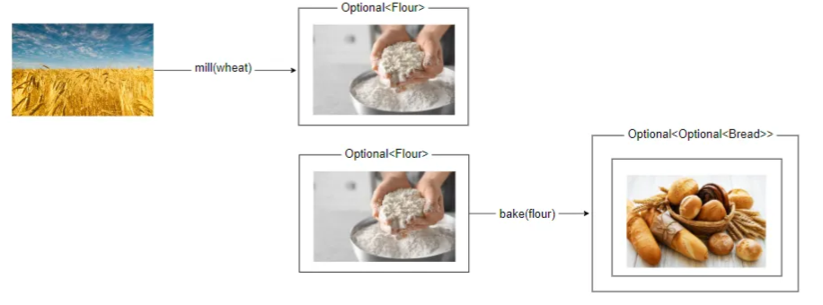

Why Optional<> is a Monad and Why the f() Should I Care?
Published: October 23, 2022
#functional-programming #design
Please, Use Optional<> In the Intended Way!
Overview
Firstly, let's see where the need for Optional (and for monads, in general) comes from. To do this, we'll start with an analogy and think of the process of making bread.
Firstly, we'll make flour by milling the wheat; after that, we'll make bread using the flour from the previous step.

We can express this in programmatic or mathematical terms using functions:
flour = mill( wheat )
bread = bake( flour )
Or, we can simply compose the two functions like this:
bread = bake( mill(wheat) )
The Corner Cases
Unfortunately, each step of the processing may fail for various reasons. When composing functions like this, error handling might be troublesome.
For instance, maybe wheat is not always successfully processed into flour, and the flour is not always correctly baked.
Depending on the programming language that we're using and on the context, this can have different effects — for instance, an exception can be thrown, null can be returned.. etc.
Let's pretend that, in our case, if something goes wrong with one of the processes, null is returned.
flour = mill( wheat )
if( flour != null ) {
bread = bake( flour )
if( bread != null ) {
// .... do something()
}
}
At this point, we can no longer compose the methods due to the null checks.
Introducing a Monad
In order to fix this, we can wrap the result of the previous function into an object that will continue the processing if the data is present, and will do nothing if the data is missing. This wrapper object will be a "monad".
For instance, we can think of a List. If there are elements inside, they will be processed according to the next step. On the other hand, if the list is empty, nothing will happen. A List is a monad.
Though, using a List here will not make much sense because we want to only pass one object at a time from step to step.
Therefore, we can construct our own monad object or use one of the existing ones. There are many monads defined in the programming languages with functional features. Depending on the language, the monad we need might be called something like a Maybe<>, Either<>, or Optional<>.
map() and flatMap()
Let's wrap our function return types into Optional<> and try to go back to function composition:
Optional<Flour> mill(Wheat wheat) { ... }
Optional<Bread> bake(Flour flour) { ... }
We will have a new problem now: to compose or chain the functions, each of them must receive the result of the previous one as a parameter.

Consequently,
the bake() function must take in an Optional
But, because the bake() function wraps the result into an Optional<>, the result of the second step will be wrapped twice, the result of the third step will be wrapped 3 times.. and so on.

The solution to this is the flatMap() function. The purpose of flatMap() is to keep the structure flat when converting from one type to another.
In other words, we can use the following conventions on a Monad:
flatten : Monad<Monad<A>> → Monad<A>
map : Monad<A> → Monad<B>
flatMap : Monad<A> → Monad<Monad<B>> → Monad<B>
Composing Functions VS Chaining Methods
We have now wrapped the return type for each step into a monad and this allows us to always pass the result to the next step.
But how should we do it? We have two possible solutions for this.
Composing Functions
Firstly, we can have the functions receive and return monads:
static Optional<Wheat> harvest() {
// ...
}
static Optional<Flour> mill(Optional<Wheat> wheat) {
// ...
}
static Optional<Bread> bake(Optional<Flour> flour) {
// ...
}
This will allow us to compose the functions in a functional programming style:
Optional<Bread> bread = bake( mill( harvest() ) );
If we read this from right to left, we can see that we're: - harvesting the wheat - milling the wheat into flour - baking the flour into bread
In some languages, like Clojure, we can even use threading macros to make this composition more elegant, and easily read from top to bottom:
(-> (harvest)
(mill)
(bake))
Chaining Methods
Java is an O.O.P. language, the Optional object itself exposes the map() and flatMap() methods - they aren't static! This means there is no need to pass an Optional object as a parameter. Instead, we should chain method calls instead of composing functions, using Optional's map() and flatMap():
Optional<Bread> oopBread = harvest()
.flatMap(wheat -> mill(wheat))
.flatMap(flour -> bake(flour));
Or using method references:
Optional<Bread> oopBread = harvest()
.flatMap(this::mill)
.flatMap(this::bake);
This article was inspired by César Tron-Lozai's talk at DEVOX.